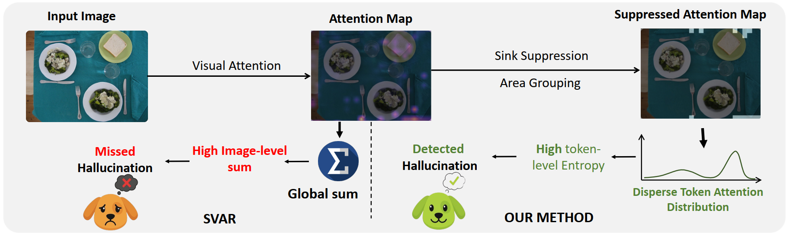
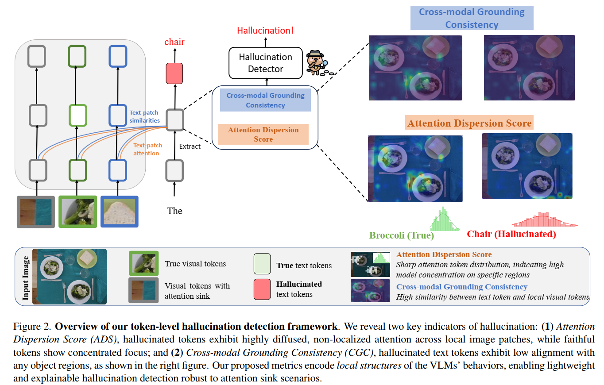
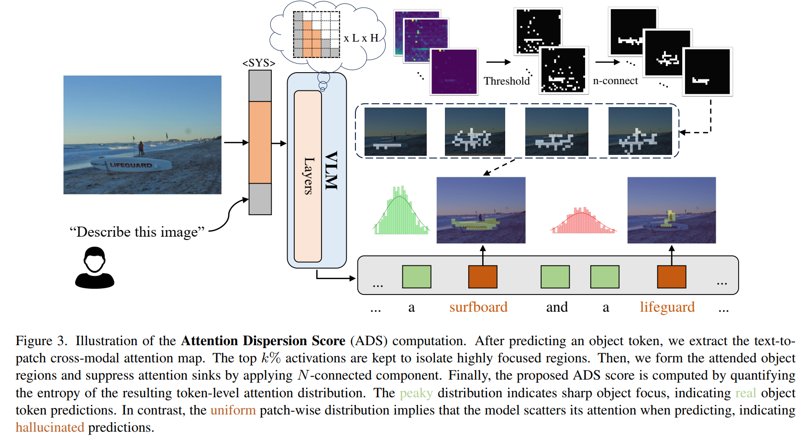
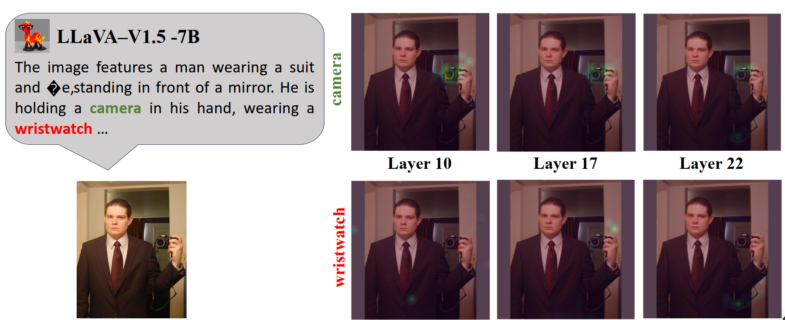
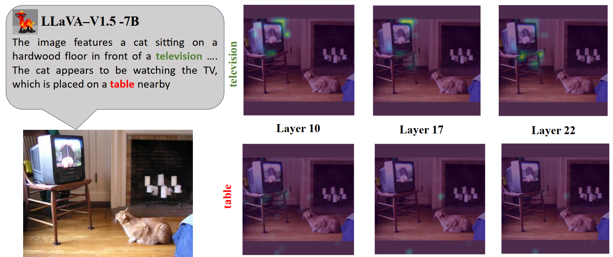
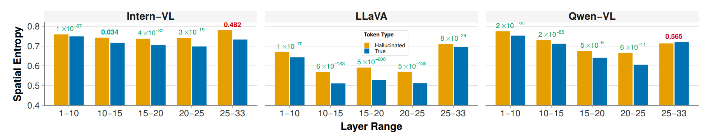
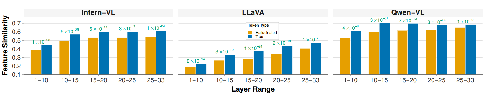
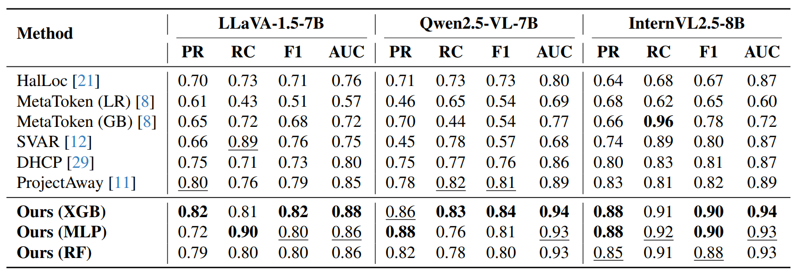
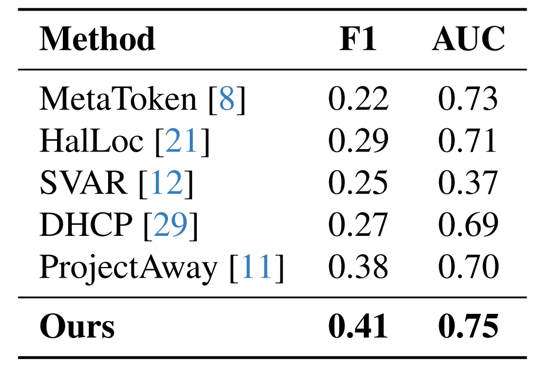
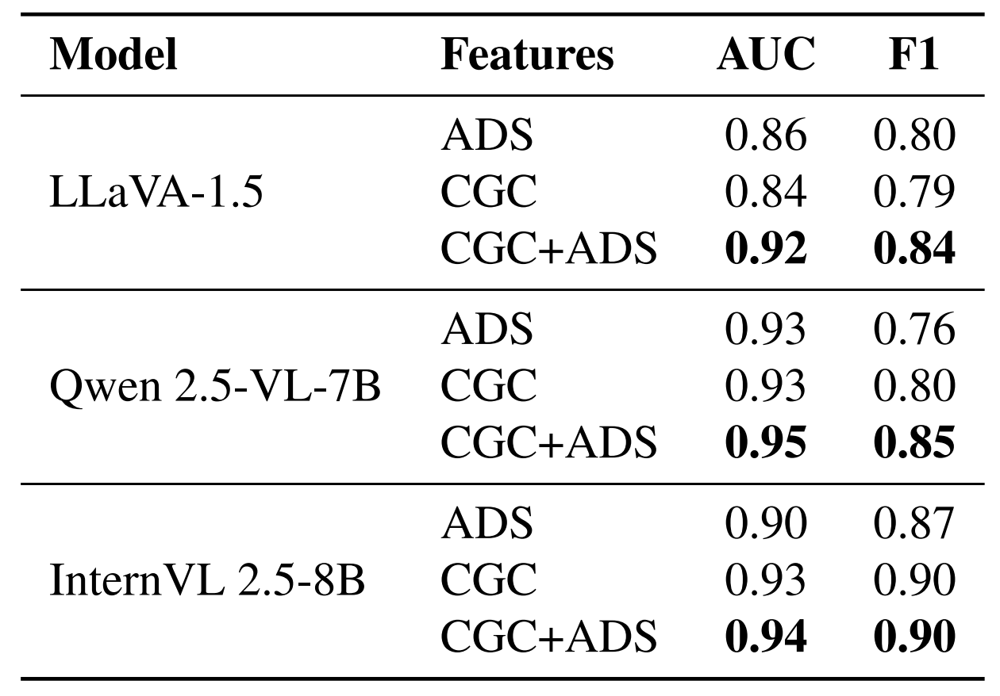

Existing hallucination detectors rely on global image-level statistics — they sum or average a token's attention across all visual patches to decide if it is grounded. But hallucinated tokens can produce weak, scattered correlations across many patches that aggregate into deceptively high global scores, fooling these methods.

Figure 1. Left: SVAR globally sums attention, missing hallucinations with scattered but high total attention. Right: Our method analyzes the spatial distribution — high entropy indicates hallucination.

Figure 2. Overview of our token-level hallucination detection framework.
We propose two complementary metrics from LVLM internals — no external models, no LVLM retraining:
Measures the spatial compactness of cross-modal attention. We threshold the top-10% patches, group into connected components to suppress attention sinks, then combine foreground blob mass with background entropy.

Figure 3. ADS pipeline: extract attention → threshold → connected components → entropy.
Low ADS → compact focus → grounded
High ADS → scattered attention → hallucinated
We evaluate the feature similarities between the generated token and image patches, and coin this metric as Cross-modal Grounding Consistency (CGC). At layer \(n\), let \(\mathbf{z}^{(n)}_t, \mathbf{v}^{(n)}_p \in \mathbb{R}^d\) be the token and patch embeddings, and define cosine similarity
which reflects local structural alignment. The per-token map is \(\mathbf{S}^{(n)}_t = [S^{(n)}_{t,p}]_{p \in \mathcal{P}}\). To emphasize localized evidence, we obtain the token grounding score \(C^{(n)}_t\) by aggregating the top-\(k\) patches \(\mathcal{T}^{(n)}_t\):
High CGC → token aligns with specific visual content → grounded
Low CGC → no patch matches semantically → hallucinated
Per-layer scores are concatenated into a single feature vector for a lightweight classifier:
We train XGBoost, Random Forest, and MLP classifiers. Detection adds <1 second per token.

Figure 4. Attention maps: true token "camera" (top) vs. hallucinated "wristwatch" (bottom).

Figure 9. CGC heatmaps: true token "television" (top) vs. hallucinated "table" (bottom).
Both signatures peak in early-to-mid layers (10–25), where cross-modal alignment is strongest before language priors dominate.

Figure 5. Layer-wise ADS: hallucinated tokens show higher dispersion in early/mid layers.

Figure 8. Layer-wise CGC: true tokens maintain higher similarity; the gap narrows at depth.
Our method consistently outperforms all baselines by 5–15% across three LVLMs.

Under heavy class imbalance (6% hallucination rate), we outperform the best baseline by +3% F1 and +5% AUC.

ADS captures where the model looks; CGC captures what it sees. Combining both yields +3–8% AUC.
